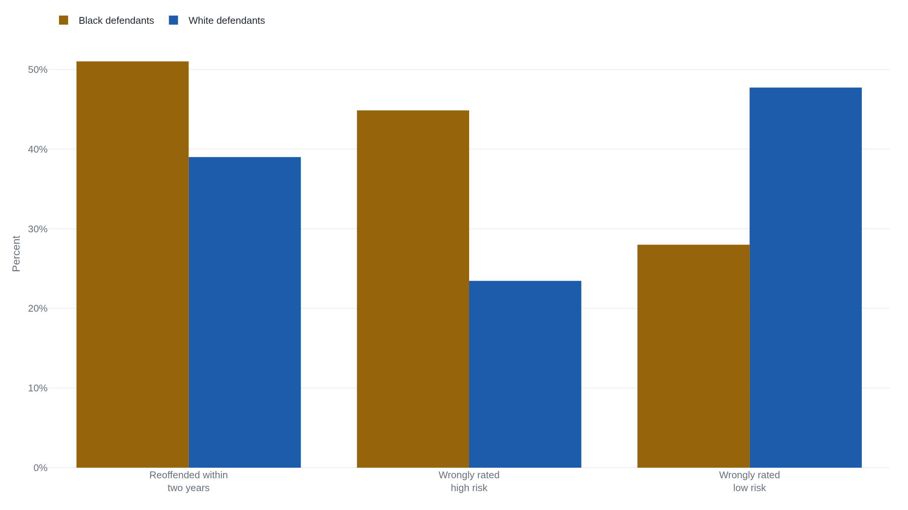

ProPublica and Northpointe read the same recidivism scores and both were right
The two sides in the COMPAS bias fight were measuring real numbers off the same 7,214 defendants, just not the same question.
Why this matters
Courts across the United States hand judges a number before deciding bail, sentence length, and parole: an algorithm's estimate of how likely a defendant is to be arrested again. COMPAS, sold by a company called Northpointe, is one of the most widely used of these scores. In 2016 ProPublica found it was wrong in a specific, racially lopsided way. Northpointe answered with its own analysis of the same data and found no bias at all. Both were reading real numbers correctly. This lesson explains why: not a dispute about arithmetic, but a mathematical fact about what happens when two groups are arrested again at different rates. By the end you will name the two fairness definitions each side used, work the arithmetic that pulls them apart, and know which question to ask the next time a score is called unbiased by one report and biased by another.
- 01
- The Dutch tax office turned a non-Dutch passport into a fraud score: a different automated government score that harmed people through a proxy, nationality. COMPAS's problem instead is a genuine trade-off between two honest ways to measure fairness.
- 02
- Machine Bias: ProPublica's original 2016 investigation, read in full, with the individual defendants' stories this lesson only outlines.
What COMPAS told the judge about Eric Loomis
Northpointe sells software called COMPAS to American courts, and judges, parole boards, and pretrial officers use its score to help decide bail, sentence length, and parole.1 Eric Loomis met that score at his sentencing. He pleaded guilty to two lesser charges: attempting to flee a traffic officer, and operating a vehicle without the owner's consent. Three more serious counts were dismissed but "read in," so the court could still weigh them. The plea deal left his sentence to the court's discretion, with up to 17.5 years possible on the two counts alone.2 His presentence report carried a COMPAS score, and the judge told him directly: "You're identified, through the COMPAS assessment, as an individual who is at high risk to the community."2
Loomis appealed. Northpointe treats the formula behind COMPAS as a trade secret, so he argued that being sentenced partly on a number he could not inspect violated his right to due process. The Wisconsin Supreme Court disagreed. A COMPAS score at sentencing, it ruled, "does not violate a defendant's right to due process," so long as the court warns itself, in writing, of its limits. Those limits include that COMPAS's workings are hidden from the court and the defendant alike, that some studies suggest it treats minority defendants differently, and that Northpointe never validated it on Wisconsin's population.2 A score, the court added, "may not be used as the determinative factor."2
The ruling upheld Loomis's sentence, though its text never states how many years the court imposed. That figure is commonly put elsewhere at six years of confinement plus five years of extended supervision. At a later hearing, the same judge said the sentence would have been the same without ever mentioning the score.2
The Wisconsin court never engaged the fight over whether COMPAS was actually biased, and the timing explains why. It heard arguments on April 5, 2016 and ruled on July 13, seven weeks after "Machine Bias" published on May 23 and five days after Northpointe's rebuttal began circulating. The opinion gestures at "a recent analysis of COMPAS's recidivism scores based upon data from 10,000 criminal defendants in Broward County, Florida" without naming ProPublica, treating the disparate-impact concern as one risk factor among four.2
ProPublica analyzed COMPAS scores given to 7,214 people arrested in Broward County, Florida. It illustrated the pattern with two defendants scored the same year. Brisha Borden, who is Black, was rated high risk. Vernon Prater, who is white, was rated low risk. Two years later, Borden had not been charged with any new crime; Prater was serving an eight-year sentence for breaking into a warehouse and stealing electronics.1 The same pattern held across the full sample. Among defendants who were not arrested again within two years, 44.85 percent of Black defendants had been rated high risk, versus 23.45 percent of white defendants. Among defendants who were arrested again, 47.72 percent of white defendants had been rated low risk, versus 27.99 percent of Black defendants.3 Overall, the score was not especially accurate either way: 61 percent of people flagged likely to commit any future crime were arrested again, and only 20 percent of those flagged likely to commit a violent crime were.1
The same defendants, counted the other way
Northpointe's response arrived seven weeks later: a technical report titled "COMPAS Risk Scales: Demonstrating Accuracy Equity and Predictive Parity." It did not dispute ProPublica's data or its arithmetic. Working from ProPublica's own released dataset,4 it stated its conclusion just as flatly: "We strongly reject the conclusion that the COMPAS risk scales are racially biased against blacks."5
ProPublica had asked: of people who did not reoffend, what share had been rated high risk? That is a false positive rate, and it was badly unequal by race. Northpointe asked a different question: of people COMPAS rated high risk, what share actually reoffended? That is predictive value, and by ProPublica's own published count it came out nearly equal: 63 percent of Black defendants rated likely to reoffend went on to do so, versus 59 percent of white defendants.35
The tool's overall ranking power came out equal too, measured by area under the curve, where 1.0 is perfect and 0.5 is a coin flip. COMPAS scored 0.69 for both Black and white defendants.5
Both descriptions are true of the same defendants. As the statistician Andrew Gelman put it, a tool can be "equally accurate between racial groups" and still be "unfair to different groups."6 Accuracy and fairness are not the same test, and COMPAS was passing one while failing the other. Northpointe framed the same finding this way: "This pattern does not show evidence of bias, but rather is a natural consequence of using unbiased scoring rules for groups that happen to have different distributions of scores."5
The math that makes both sides right
Northpointe's phrase, "groups that happen to have different distributions of scores," names the real cause. Black defendants in the Broward sample were rearrested within two years at 51 percent; white defendants, at 39 percent.7 That is the base rate: the share of a group that actually reoffends, measured after the fact. A statistician named Alexandra Chouldechova proved, in a 2017 paper, that when two groups have different base rates, a score cannot equalize both error rates and predictive value at once.7
Her proof turns on one equation relating four quantities: a group's false positive rate (FPR), false negative rate (FNR), predictive value (PPV), and base rate (p).
- FPRFalse positive rate: the share of non-reoffenders a group's score wrongly rated high risk. ProPublica's criterion.
- pBase rate: the group's true share of reoffenders, measured after the fact.
- PPVPredictive value: the share of people the group's score rated high risk who actually reoffended. Northpointe's criterion.
- FNRFalse negative rate: the share of reoffenders a group's score wrongly rated low risk.
Read the equation for what it says. Fix two groups to the same predictive value and the same false negative rate. A group's false positive rate then rises and falls only with its base rate. Black defendants entered the Broward data with a higher base rate than white defendants, and Northpointe's own numbers show COMPAS came close to equal predictive value for both groups. A score built that way was required to produce a higher false positive rate for Black defendants than white, the same direction ProPublica measured.

A second, independent proof reaches the same wall from a different direction. Jon Kleinberg, Sendhil Mullainathan, and Manish Raghavan defined three conditions a fair score would meet, in a paper published the same year. Calibration: the score means the same thing for both groups. Balance for the negative and positive classes: people who will not reoffend, and people who will, each get the same average score regardless of group. Satisfying all three at once, they showed, is possible only if the score predicts perfectly or the two groups already share a base rate.8 COMPAS does neither. Calibration is what Northpointe's predictive-parity argument amounts to. The other two conditions together are what ProPublica's error-rate argument amounts to. Outside those two narrow cases, the theorem says a score cannot have both.
What the equation doesn't decide
Two smaller fights sit inside the bigger one. Northpointe argued that ProPublica's cut point and regression model inflated the disparity; ProPublica's technical response showed the gap survived under Northpointe's preferred cut point and model, a Cox survival model.59 Neither exchange touches Chouldechova's equation, which holds for any cut point or model: it is a fact about false positive rates, predictive values, and base rates, not about how any one is calculated.
What the equation cannot settle is a different, older question: why the base rates differ at all. Both proofs take the 51-versus-39 gap as a fact about the data; neither says where it comes from. Four independent statisticians, examining the same public data, made the same point in plain language. Once the two groups' reoffense rates differ, they wrote, "it's actually impossible for a risk score to satisfy both fairness criteria at the same time." "The imbalance ProPublica highlighted," they added, "will always occur."10 Whether that gap reflects biased policing upstream of the algorithm, rather than a true behavioral difference, is a separate question none of these sources resolve.
Kleinberg, Mullainathan, and Raghavan's theorem was never really about COMPAS. It applies to any score sorting people into groups without a shared base rate, deciding bail, a credit line, or a résumé.8 The choice facing that score's designer, equalize the errors or equalize the predictive value, cannot be dodged by better data or a cleverer model. It must be made on purpose.
The takeaway
ProPublica was right that COMPAS flagged Black defendants who never reoffended as high risk far more often than white defendants who never reoffended. Northpointe was right that, among people COMPAS scored as likely to reoffend, Black and white defendants reoffended at almost the same rate. Both claims are true at once, because Black and white defendants in the Broward data did not reoffend at the same overall rate. A score cannot equalize error rates and predictive value across two groups unless their base rates already match or the score predicts perfectly. Neither condition held for COMPAS. The next time a risk score is called unbiased by one report and biased by another, ask two questions. What is the gap in base rates between the groups it scores? Which property, equal errors or equal predictive value, does this decision need? A score can usually give you one but not both, and choosing which one is a policy decision no formula can make for you.
- 01
- Chouldechova, "Fair Prediction with Disparate Impact": the full proof behind the equation this lesson quotes.
- 02
- Kleinberg, Mullainathan, and Raghavan, "Inherent Trade-Offs in the Fair Determination of Risk Scores": the general theorem, not specific to COMPAS, that this lesson's proof is one case of.
Sources
- Angwin, Larson, Mattu, Kirchner · "Machine Bias," ProPublica (May 23, 2016)
- State v. Loomis, 881 N.W.2d 749, 2016 WI 68 (Wis. 2016)
- Larson, Mattu, Kirchner, Angwin · "How We Analyzed the COMPAS Recidivism Algorithm," ProPublica (May 23, 2016)
-
ProPublica ·
compas-analysisdata release and analysis notebook, GitHub - Dieterich, Mendoza, Brennan · "COMPAS Risk Scales: Demonstrating Accuracy Equity and Predictive Parity," Northpointe Inc. Research Department (July 8, 2016)
- Larson and Angwin · "ProPublica Responds to Company's Critique of Machine Bias Story," ProPublica (July 29, 2016)
- Chouldechova · "Fair Prediction with Disparate Impact: A Study of Bias in Recidivism Prediction Instruments," Big Data, vol. 5 (2017)
- Kleinberg, Mullainathan, and Raghavan · "Inherent Trade-Offs in the Fair Determination of Risk Scores," ITCS 2017
- Larson and Angwin · "A Technical Response to Northpointe," ProPublica (July 29, 2016)
- Feller, Pierson, Corbett-Davies, and Goel · "A Computer Program Used for Bail and Sentencing Decisions Was Labeled Biased Against Blacks. It's Actually Not That Clear," Washington Post (October 17, 2016)